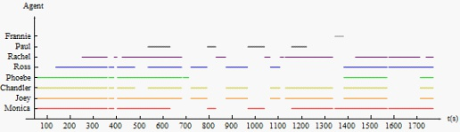
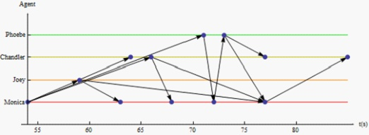
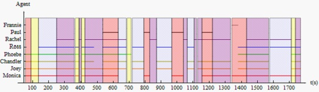
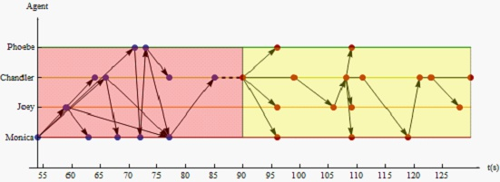

电影情节的结构
“电影情节” 有时是对一部电影的内容不加区别的统称, 有时是对一种可能出现的结构的指称. “这部电影的情节很淡” 偏向前一种情况, “这部电影没什么情节” 则偏向后一种. 本文探讨后一种情况.
电影情节的结构
当你想向他人介绍一部电影时, 可能会使用语言, 并进行一些概括. 假设你是这么向别人介绍某部电影的: “他激怒了她, 她一怒之下对他开了枪, 把他杀了”. 这是你对电影中发生的 “事情” 的描述和概括. 从语言上来讲, 你说的这段话可以分成三个部分:
- “他激怒了她”
- “她一怒之下对他开了枪”
- “把他杀了”
这三个陈述分别对应电影中发生的三件事:
- 他激怒她
- 她对他开枪
- 他死了
这三件事通过 因果关系 相联系: 因为他激怒她, 所以她开枪; 因为她开枪, 所以他死了. 如果去掉因果关系, 这三件事就相互独立, 但各自依然具有意义, 虽然此时 “他” 和 “她” 不再必然指向相同的对象.
考虑到语言的概括性, “他激怒了她” 这句话可能对应了更多的事情, 比如:
- 他骂她
- 他给了她一巴掌
- 他继续骂她
- …
“激怒” 不对应可以直接观察到的行为, 而 “骂” 和 “打” 则可以. 本文称这样的事情为 事件.
事件可以通过因果关系相联系构成更大的结构, 但因果关系并不是唯一可能的关系. 比如 “他看了看书, 喝了喝咖啡, 玩了玩电脑” 中, 对应的三个事件并没有明显的因果关系. 三件事情最明显的联系是: 看书, 喝咖啡, 玩电脑都是同一个人做的事情. 本文称 “他” 对应的对象为 动元 (agent), 这三个事件则具有 共动元关系. 因果关系必然意味着共动元关系, 因此本文称因果关系强于共动元关系.
电影中某些事情的原因并不直接出现, 但可以明显推测出. 比如电影开头小丁和小红在讨论要怎么给小白一个惊喜, 然后在电影中间, 他俩给了小白一个大大的惊喜. 严格来讲, “讨论” 这件事情并不是小白得到惊喜的原因, 但两者明显是有联系的. 本文称这样的关系为 相关关系, 并认为其强度介于其它两个关系之间.
总结一下, 电影中出现的事情, 可以分解成某种最小的单元, 称为事件. 事件可以通过因果关系, 共动元关系, 相关关系相结合构成更大的结构. 顺着这个思路, 我们定义 情节 为一部电影中 可能出现的最大的结构. “最大” 意味着, 一部电影若有两个情节, 则这两个情节不能通过三种关系中的任意一种相联系, 即两个情节无关. 如果这两个情节中的事件可以通过因果关系, 共动元关系或相关关系中任何一种相联系, 则这两个情节必然结合成一个更大的情节.
一部电影通常只有一个情节, 但也有多情节的例子, 比如王家卫的 重庆森林 有两个情节, 俄罗斯电影 三件事 有三个情节.
实例分析
我们使用上述概念对美剧 “Friends” 的第一季第一集进行分析.
下图是这集的几个角色的出场分布:

下图是开头出现的 12 个事件的关系图, 用 “→” 表示因果关系:

12 个事件分别是:
- (54, 1): M: “真没什么好说的! 就一同事!”
- (59, 2): J 说: “说嘛! 你要和他约会诶, 他总有点什么毛病吧!”
- (63, 1): M 无语
- (64, 3): C (对 J): “你太坏了, J.”
- (66, 3): C (对 M): “他是个驼背? 驼背还秃顶?”
- (68, 1): M 无语
- (71, 4): P: “等下, 他吃粉笔吗?”
- (72, 1): M 不解
- (73, 4): P (对大家): “我是怕她重蹈我和卡尔的覆辙. 哎!”
- (77, 3): C 无语
- (77, 1): M: “行了, 大家别鸡冻, 这都算不上约会, 就两人吃个饭, 不 xxoo.”
- (85, 3): C: “听着像是和我约会.”
(t, a) 表示在 t 时刻, 和 a 有关的事件.
M 的约会是这 12 个事件的主题, 此主题后来还会出现. 这集围绕三个主题展开, 下图用不同颜色表示:

红色块中的事件围绕 M 的约会, 蓝色块是 Ross 的失恋, 紫色块 Rachel 的逃婚. 同色块中的事件通过因果关系和相关关系联系; 异色块中的事件仅有共动元关系或很少的另两种关系. 黄色块与其它色块, 以及它们自身之间的关系都很弱, 几乎只有共动元关系: 第一块, Chandler 的梦; 第二, 三块, 大家看电视; 第四块, P 唱歌; 第五块, 调侃 J 的屁股.
这一集中的所有事件至少可以通过共动元关系全部联系起来, 因此只有一个情节. 但同色块 (除了黄色) 内部联系要强于异色块间的联系, 因此可以引入 事块 的概念: 事块内部的事件由因果或相关关系联系, 与外部事件仅有共动元关系. 第一个黄色块即为典型的事块:

上图显示了两个事块间由共动元关系这种弱关系联系 ("- - -" 表示共动元关系, “—” 表示相关关系), 各自内部的事件则具有强关系.
第一个黄色块中的事件:
- (90, 3): C: “我梦见回到高中, 站在食堂中间, 妈的还全裸.”
- (96, 1) (96, 2) (96, 4): M, J, P: “哈哈, 做过这种梦.”
- (99, 3): C: “然后我朝下一看, 我靠, 一个电话… 在那里.”
- (106, 2): J: “代替了鸡 (被打断)”
- (108, 3): C: “对!”
- (109, 1) (109, 2) (109, 4): M, J, P: “没做过这种梦.”
- (111, 3): C: “突然, 电话响了. 我一下呆住了, 大家都开始看我.”
- (119, 1): M: “他们之前都没看你吗?”
- (121, 3): C 无语
- (123, 3): C: “最后我想我还是接了吧. 一听是我妈.”
- (128, 2): J 略疑惑
- (130, 3): C: “这太怪了. 因为我妈从来不打我电话.”
审美的层次
上文的探讨沿着还原主义的思路进行:
- 一部电影的内容可能包括一个或多个情节.
- 情节可能能分解成事块.
- 事块可能分解成事件.
情节, 往往是一般观众关注的焦点, 尤其是对于故事性较强的电影. “主角一开始很弱, 后来遇到了契机获得了超能力, 经历了磨难, 最后拯救了世界” 之类的描述就是对电影情节的概括.
但是情节并不是我们唯一可以关注的层面. 对于多情节电影, 多个情节形成某种更大的结构, 这种结构给我们带来不同类型的审美体验. 比如 “重庆森林” 中的两个故事虽然没有结合成单一的情节, 但以某种微妙的方式联系, 给我们某种 “感觉”, 这种感觉当我们仅仅聚焦于情节这个层面时是体会不到的.
有的电影给人 “淡淡” 的感觉, 或者说情节性不强, 比如 花与爱丽丝, 或者 爱在黎明破晓前. 这样的电影中, 事块往往是我们关注的焦点. 电影并没有很强的因果导向性, 电影的这部分和那部分交换或者去掉也并不太影响我们的审美体验.
再往下, 比如 Béla Tarr 的电影 撒旦探戈 以事件层次为侧重, 情节很简单, 但事件的时长普遍较长, 通过慢节奏体现出事件本身的质感.
有一种特殊的情况, 整部电影由事件组成, 但事件间缺乏因果关系或其它两种关系, 比如 夜曲, 一条安达鲁狗. 这样的电影中, 事件与事件间形成了更微妙的关系, 因此带来特殊的体验.
上面的这些例子表明, 情节 - 事块 - 事件, 每个层次的结构都可以作为审美的焦点, 某种审美体验的来源, 或者导演用心雕琢的对象. 而且这些结构之间也可以有更丰富和微妙的关系, 不仅仅是本文提到的三种关系.
还可以继续还原. 比如 石榴的颜色 中, 导演通过类似静态的图像, 体现画面层次特有的构图和色彩上的美感. 又比如在 新世纪福音战士 中, 导演用快速切换的画面来表现明日香紊乱的心理活动. 此时虽然画面与画面间因为时间上的相继性而必然具有一种时间模式或关系, 但这种关系是非传统的. 不存在人物的同一性, 背景也全然不同.